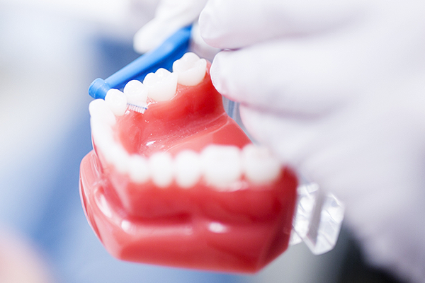
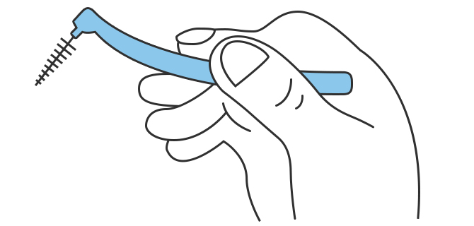
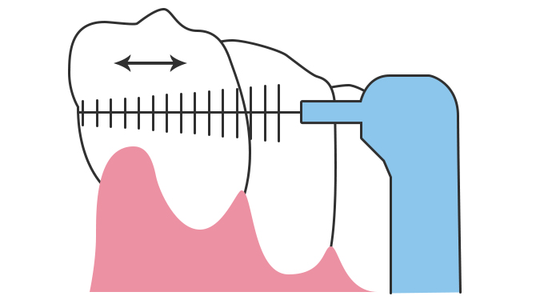

치아 사이 작은 틈을 닦는 치간칫솔
큰 사이 치아 공간이나 임플란트와 같은 보철물이 있을 경우에는 칫솔과 치실로는 완전히 닦이지 않아 치간 칫솔을 이용하여 닦아 줍니다.
치간칫솔은 하루 몇 번?
하루 세 끼 식사 후 양치질 후에 치간칫솔을 사용하는 것이 가장 바람직하지만, 현실적으로 쉽지 않으므로 아침에 일어난 직후나, 저녁식사를 한 뒤 등 일정한 시각을 정해놓고 입 속을 청소합니다.
치간 칫솔 사용은 이렇게
-

치간 칫솔의 머리 부분을 적당한 각도로 구부리고, 가볍게 연필을 쥐듯이 잡습니다. -

치간 칫솔의 머리 부분을 적당한 각도로 구부리고, 가볍게 연필을 쥐듯이 잡습니다. - 잇몸 사이의 공간에 따라 모를 선택적으로 사용하기
- 오래 사용한 치간 칫솔은 잇몸에 손상을 줄 수 있어 1주일에 한 번 교체하기
- 잇몸에 출혈이나 붓기가 지속되면 치과 방문하기
치간 칫솔 사용 시 주의사항
입냄새는 크게 일상적인 생활 속에서 정상적으로 발생하는 생리적, 신체 이상이 생겨 발생하는 입냄새, 본인 스스로 입냄새가 난다고 느끼며 심리적으로 위축된 주관적인 냄새로 나눌 수 있습니다.